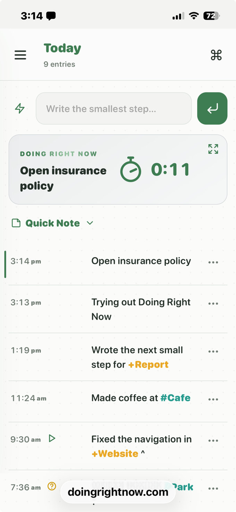
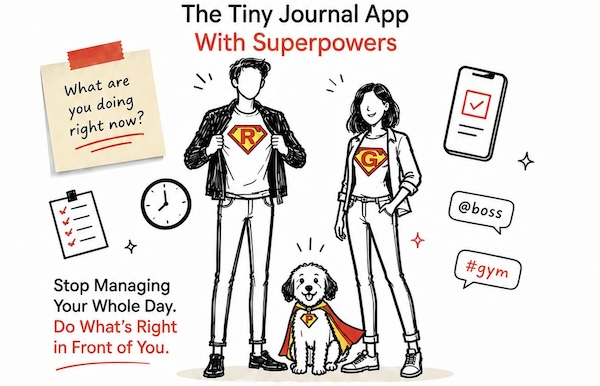

Shrink the next step
Don't write "Edit the report." Write "Open the document — edit the introduction." Tiny starts beat big plans.
Not what you should do tomorrow — one grounding question: What are you doing right now? Write the answer. Timestamp it. When it changes, write the next line. Not a planner, to-do list, or habit tracker.
Free! No sign up, login, passwords, ads or tracking. Your journal stays on your device.

Don't write "Edit the report." Write "Open the document — edit the introduction." Tiny starts beat big plans.
Your brain is a processor, not a storage drive. Log the line so you don't have to hold it in your head.
Your timeline is a safety net. Come back anytime and see exactly what you were just doing.
There's research on this, not just a productivity slogan. Getting a task out of your head, shrinking it until you can start, and noticing what you just did are well-studied ways people get unstuck. This journal is simply a place to do those three things.
Search when you need to look back, then copy the matches directly or edit a plain-text copy first. Quick Note is a scratchpad; Quick Add saves lines you reuse. Projects are optional: every journal has +Ongoing as a catch-all; add another name only if you need a separate document. Begin a project-document or issue line with Today: to collect it in a clickable view across projects. Any past entry can be copied into Today — the original stays where it was. System provides a JSON backup you can restore, plus a readable text export that cannot be imported.
You can also tag a line with @person, #location, or +project. Use standalone ^ for started, ! for important, or ? for a question. Example: review checkout flow +Website ^ — search that later if you want the history.
This doesn't need to replace your planner. Those tools can hold the plan. This one is for the part you're actually doing.
The journal is one timestamped line at a time. Some things don't belong there — a URL, a thought for after this, a reminder before bed. Quick Note is a scratchpad for that. Use the note icon in the header, from any view. It auto-saves.
One overall pad, not a note for each day. Don't turn it into a second planner — you can ignore Quick Note entirely.
If you type the same line often, save it once in Settings. Use the lightning button beside the Today composer to choose a template — tweak it if you want, then press Enter to log it with a new timestamp.
Tags work here too — @Bill, #home, or +Website.
Neither Quick Note nor Quick Add is required. The journal works without them.

Doing Right Now targets the specific paralysis that heavy task managers can induce — one timestamped line at a time.
You don't have to organize your life before you begin. Write one line. Do that.